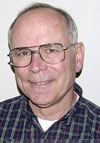
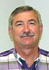
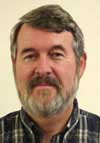
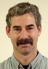
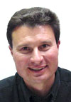

Consultants
In the field, there is no substitute for experience. Fortunately, experience is one of the great strengths of the Dellavalle approach. Our consultants are spread throughout California for easy access. Due to the wide diversity of California agriculture, their expertise includes tree crops, field and row crops and vineyards as well as landscaping. In addition all have worked with water compliance issues as dictated by the Department of Health Services and the California Regional Water Quality Control Board.
43 Years Experience
- Nat B. Dellavalle
- Certified Professional Agronomist/SoilScientist
- Certified Crop Advisor
- Mobile: 559 647-5316
- Areas: Outside California, Foreign countries, Southern California
- Email Nat

34 Years Experience
- Hugh A. Rathbun
- Certified Professional Soil Scientist
- Certified Crop Advisor
- Mobile: 559 994-8060
- Areas: Fresno, Merced and Stanislaus counties
- Email Hugh

32 Years Experience
- Keith M. Backman
- Certified Horiculturist/Pomologist
- Certified Crop Advisor
- California Water Distribution Operator
- Mobile: 559 647-5330
- Areas: Eastern Fresno County, Kings County, Northern Tulare County, San Luis Obispo County and Santa Barbara County
- Email Keith

17 Years Experience
- Ben Nydam
- Consultant, Irrigation Specialist
- Certified Crop Advisor
- Radiation Safety Officer
- Mobile: 559 647-5331
- Areas: Kern County, Tulare County, Kings County
- Email Ben

14 Years Experience
- Danyal Kasapligil
- Certified Crop Advisor
- Certified Agricultural Irrigation Manager
- Certified Irrigation Designer
- Agricultural Pest Control Advisor
- Radiation Safety Officer
- Mobile: 831 750-4509
- Areas: Alameda, Contra Costa, Marin, Monterey/San Benito, Napa and Santa Cruz counties
- Email Danyal

40 Years Experience
- Bill Blanken
- Agronomist
- Mobile: 559 469-2832
- Areas: Kern, Kings and Tulare counties
- Email Bill

2 Years Experience
- Hitoshi Suyama
- Staff Agronomist
- Mobile: 559 469-2866
- Areas: Kern, Kings and Tulare counties
- Email Hitoshi